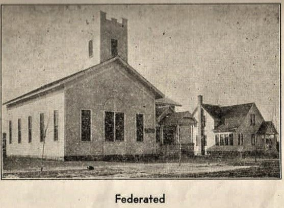
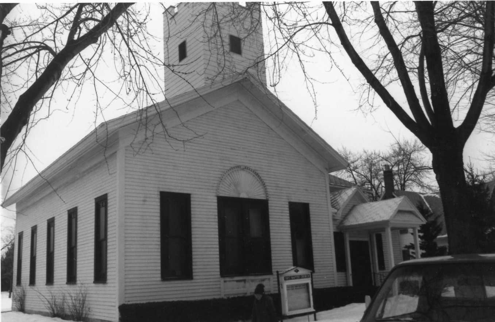
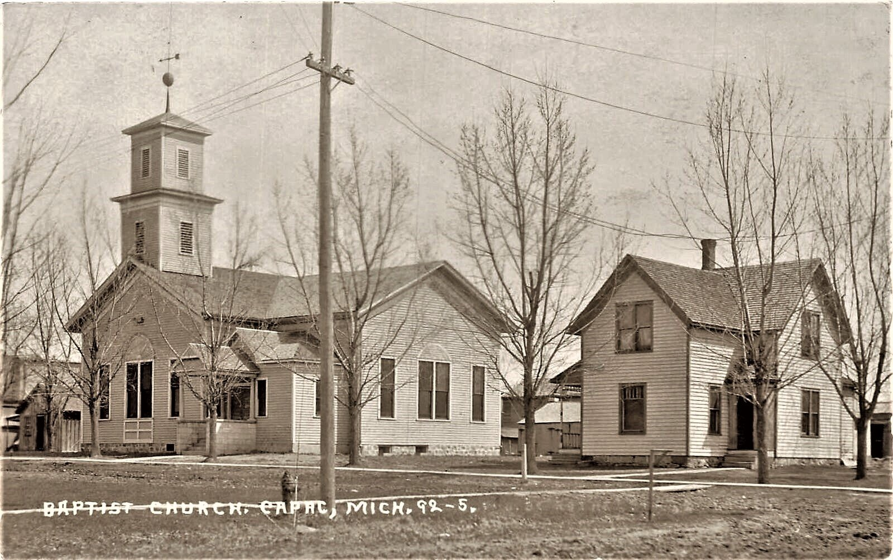

History of First Baptist Church of Capac
The Free Will Baptist Church organization was consummated May 13, 1871 at which time the articles of association were formulated with the signers as follows: Rev. Peleg Matteson, Rev. A. Cooper, David McTyrell, Richard Scott, Ruth Brooker and Dinah Matteson.
Rev. Matteson was the first pastor and the meetings were held in the first school which was located on the northeast corner of E. Church and Walker streets which is approximately the site of the property known as the Duane Martin residence.
May 27, 1872 a meeting was called to incorporate the Free Will Baptist Church. The signers were Richard Scott, Wm. Preston, Rev. Matteson, Malcolm McNaught and James Hern.
Rev. Matteson resigned as pastor in 1873 and Rev. E. J. Doyle came to serve the congregation until 1885.
On December 23, 1873 a committee was appointed to meet with and entertain the proposition made by the trustees of the Methodist Protestant society to build a church to be used jointly. In 1875 under the leadership of Rev. Doyle of the Baptist society and Rev. Currier of the Methodist Protestant society the upright portion of the building of E. Church Street, which is now known as the Federated Church, was completed.
The lot was donated by the wife of Judge Walker. Mrs. Susan Waltz’s grandfather, George W. Curtis, made and donated the shingles for the church. At times the two societies used the building on alternate Sundays and each operated separately. The Easter and Christmas programs were always union services and the building was known as the Union Church.
November 18, 1879 Ladies of the Baptist society met at Mrs. McNaught’s home and organized a social society. They elected the following officers: President, Mrs. T. J. Bottomly; Vice Presidents, Miss Nettle Lester, Julia Lewis, Miss Clara McNaught; Treasurer, Miss Jennie Warren and Secretary, Mrs. E. J. Doyle. The object of this society was to raise money for the church.
During the summer of 1879, the steeple of the church was blown down by the tornado that also damaged the new high school and the Methodist Episcopal Church which were being constructed. On July 9, 1880 the Union Church was damaged again when lightning struck the steeple knocking plaster off the church and making it unfit for use.
July 11, 1830 the Free Will Baptist Society bought out the share belonging to the Methodist Protestants for $350. The repairs for damage caused by lightning now brought the total indebtedness to about $500. A part of the bill for repairs was $2.50 for plastering, $55, scantling $50, mortar $1.87, stove blackening $10 and labor on pulpit $75.
Rev. Doyle was a popular man in the new community and pastored the organization for 12 years starting on a salary of $200.00 a year. Sometimes it was very hard to get enough money to pay his salary but the members of the congregation were glad to contribute wood, flour, salt pork, hay, etc., to their beloved pastor. It was the custom to have pound parties for the local ministers at quite regular intervals and each person would bring a pound of coffee, a pound of sugar, a pound of tea or anything else he cared to. The following week the newspaper always carried an item enumerating the articles received by the pastor.
The sexton of the church received $40 a year and he had to furnish the wood and oil and keep the church clean and open on all occasions.
As was true for so many ministers in early days, Rev. Doyle pastored more than one community. He held services at Lockbridge, Kelley, Churchill and Riley Center schools.
After Rev. Doyle left here he settled south east of here and was the founder of the settlement known as Doyle.
The next minister was Rev. James Wallace who came in 1885 and served until 1900. He returned again to serve this community from 1911 to 1918.
In 1886 the bell was raised higher in the steeple so its call to worship would resound farther over the countryside. The pioneers were very diligent in their efforts to further the spiritual welfare of the young community.
Some of the Rev. Walters, Rev. Scheurer, Rev. Rodesiler, Rev. Fuchs, Rev. Vogel, Rev. Koehler, Rev. Moeller, Rev. Kuhn, Rev. Voelker, Rev. Mohm, Rev. B. Hearl and now Rev. Riebel, Rev. Fischer, Rev. Schurman, Rev. Daebler, Rev. Lloyd Hansen.
The church hopes to grow and build with the community of Capac.
In 1892 the lot on the west side of the church was purchased from the Hon. D. C. Walker for $100. Mr. Walker donated back $50 of the lot present parsonage was built. The barn was built on the back of the lot in 1897.
Rev. Meyers came to fill the pastorate in 1900. His salary was $500. He served the Lynn Church also. In 1901 the envelope system of giving church contributions was adopted. About this time it also became customary to appoint a pulpit committee when a minister left. It became the duty of the committee to secure a pastor and to serve him as long as he remained pastor. When he left a new committee was appointed.
Rev. Meyers was followed by Rev. Jackson. In 1904 the members voted to install electric lights, gas lights had been used previously, put in a new furnace and a baptistry and to build an addition to the church. On November 12th, 1904, the work was completed and the dedication took place November 13th.
Rev. John Tree served the church from 1905 to 1909, followed by Rev. Freeman. Rev. Wallace returned in 1911 to serve until 1918 when he resigned because of ill health. He died in March 1919.
Rev. Waid came in 1918 and about this time an idea was entertained of forming a union of two or more churches due to the small congregations and the difficulty of supporting a minister in each church. In April 1919 B. Aldrich, S. Sharrard, Thomas Cade and Herman Hildebrandt were appointed as a committee to investigate the possibility of a federation. By the fall of 1919 the federation of the Baptist and Methodist Episcopal Churches had taken place. The services were held in the Baptist Church. The Methodist Episcopal Church was used for all social gatherings. Rev. Leigh Hagle, Rev. Botrell and Rev. Cilley were pastors in the early years of the Federated Church. In 1931 Rev. Mitchell served one year and was followed by Rev. Ramsdell who came in October 1932. In March 1935 Rev. Engleman became pastor and served until the coming of the present minister, Rev. A. J. Turvey, in May 1938. Rev. Turvey is now beginning his twentieth year as minister of the Federated Church and has served his people very faithfully for the entire period.


